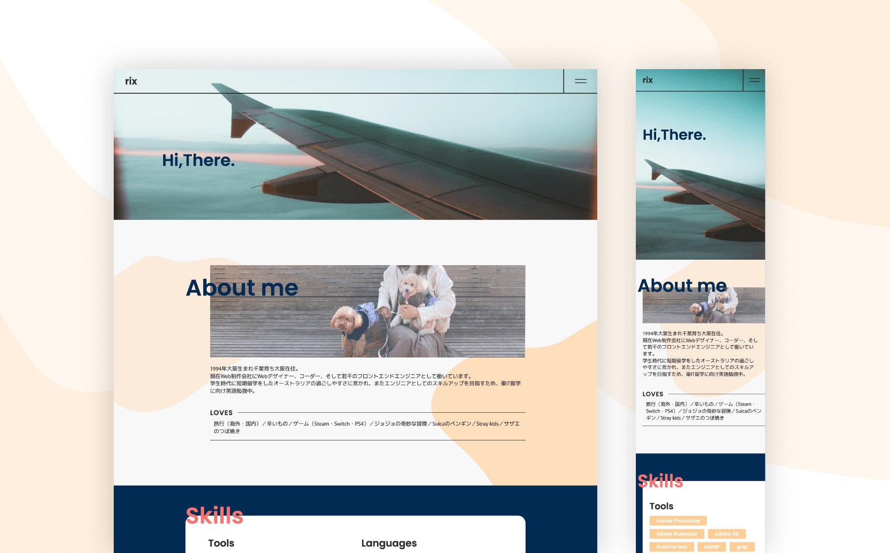

and-rix
rix's portfolio
website

- Date
- 2021/12
- Skills
- Adobe XD VScode HTML5 Sass(scss) gulp git(CUI) github Docker
VScode、git(CUI)、github、Dockerの使い方を学ぶため、これらのツールを使用し製作したサイトです。その他、仕事では対応ブラウザのためあまり使う機会の無かったプロパティや、sassの各種機能を積極的に使うようにしました。
リポジトリはこちら。
Comment
上記ツールのスキルアップの他、新しくMacBookを購入したのでsassやgitなどの開発環境を整える目的もありました。とにかく一通り着地することを重視したため、デザインの細かいところまで行き届いてないのが反省点。近いうちに作り直します。